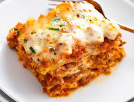

Lasagna Recipe

Lasagna is one of my favorite recipes to make, especially in the winter.
With the nights getting colder, you'll want to give this recipe a try to warm yourself up.
Making this lasagna really isn't all that difficult; before you know it your family will be
begging for another bowl. Interested? Let's dive in!
Ingredients
- 16 oz Lasagna noodles
- Onion
- 32 Oz Can of Crushed Tomatoes
- half a head of garlic
- 1 lb of ground beef, 85/15
- Dry red wine
- 3 large carrots
- 2 quarts of chicken stock
- mozzarella
Steps
- Begin by browning the beef in a large stock pot. Remove from pot after, but leave the fat in the pot
- Dice the onions and carrots and sweat in the beef fat. Once translucent, add minced garlic and fry until fragrant.
- Deglaze the pot with the red wine and scrape the fond. Add the tomatoes and the beef. Top the pot with chicken stock and cook out for about 30 minutes.
- Once finished with sauce, boil noodles and shred the mozzarella cheese.
- Layer the noodles in baking dish and spread meat sauce on top. Cover with shredded mozzarella. Repeat until pan full.
- Bake in oven at 425 degrees Farenheit until browned and enjoy with remaining wine!
Home